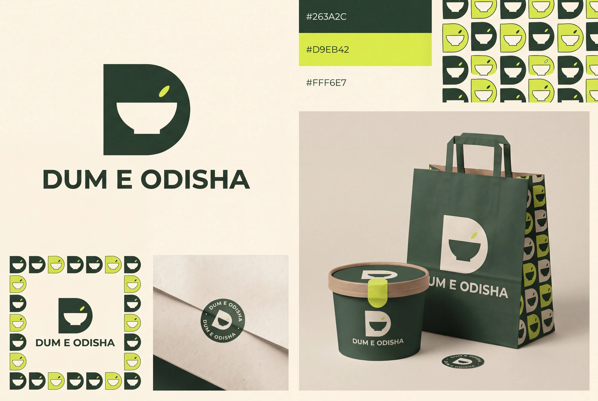

Food-brand explorations / 03
The Bowl D
A sturdy D holds a bowl-shaped counter. The compact symbol can lead seals and avatars, while a complete wordmark keeps the business name clear.
Clear.
compact, graphic.
The compact C-and-bowl and geometric utensil studies in the Dribbble screenshot demonstrate negative-space economy. This mark instead explores a distinct D silhouette with a bowl counter and different geometry.
A small abstract mark scales well, but it must keep its D reading and always be paired with the full name during early use.

The identity, applied
A whole visual world.
The compact symbol is designed for avatars and seals, with the full name carrying recognition on larger surfaces.


A small system, with a clear idea
What makes it
this direction.
- Graphic device
- A compact D/bowl symbol and generous two-colour fields.
- Typography behavior
- Bold quiet sans-serif wordmark; ample space around the small symbol.
- Packaging direction
- Forest paper panels, lime seals and cream labels.
- Draft voice example
- “A little mark. A generous welcome.”
Why it belongs in this round.
The compact C-and-bowl and geometric utensil studies in the Dribbble screenshot demonstrate negative-space economy. This mark instead explores a distinct D silhouette with a bowl counter and different geometry.
The full business name remains Dum E Odisha. The route name describes a creative direction, not a proposed rename. This is a distinct alternative to compare with the current and script-led ideas.
Artwork is generated raster exploration, not an approved vector master or manufactured packaging. No recipe, ingredient sourcing, founding story or customer result is implied by the visual direction. Final selection, small-size refinement and production proofing remain separate steps.